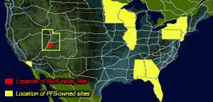

Yucca Mountain wont solve the waste problem
The total volume of US high-level nuclear waste is expected to exceed Yucca Mountain's
77,000 tons capacity
before it can open, and it would only be able to accept about half the waste expected to
be generated by all US reactors. This is mostly due to the continued operation of
existing plants, and the nuclear industry and Bush administration's insistence that more
will be licensed. Whether or not Yucca
Mountain is built, nuclear waste will always be scattered at
nuclear reactors throughout the country as long as reactors continue to operate.
Secretary Abraham announced $17 million subsidies of taxpayer money to three wealthy
nuclear
utilities to begin the process of licensing new reactors. They obviously arent serious
about the waste problem, but simply want to ensure the continued use of this obsolete,
expensive technology for industry, and spend tens of billions more
taxdollars to support it. Already the government has spent $7 billion on Yucca Mtn;
today's total cost estimate is $58
billion and it keeps rising.
Area Unsuitable for a Permanent High-level Waste Dump
The Department of Energy, NRC and Environmental Protection Agency all have
weakened public protection
standards in recent years to accommodate the site designation.
Yucca Mountain is in what is classified as a "Class-4 Probability Earthquake Hazard
Zone" by the USGS.
There are 33 earthquake faults in the immediate area, including two that run
under Yucca Mountain. In 1992, a magnitude 5.6 earthquake in the vicinity of
Yucca Mountain
caused $1 million in damages to the DOE Field Operations Center.
The area also has a long history of volcanic activity- the mountain itself is a "collapsed caldera"
and is surrounded by dozens of extinct volcanoes. Cinder cones surrounding it are evidence of
relatively recent volcanic activity. The volcanic tuffs at Yucca are highly fractured and
faulted, presenting a pathway for gaseous radionuclides to escape into the environment.
Such fracture conductivity has already been documented at the Yucca site.
The origin of calcite/opal deposits at Yucca indicates that water has "upwelled" in the past.
These mineralized thermal fluids could threaten the integrity of a repository.
Spent Nuclear Fuel also continues to produce thermal energy after disposal.
high temperatures will affect the waste packaging and surrounding rock stratas.
In 1995, DOE scientists reported that high-level radioactive waste in a repository could
reach criticality and possibly result in a nuclear explosion.
A chain reaction could occur with an unknown blast yield.
Groundwater contamination is a major concern and is the most likely means by
which radionuclides would be transported to the environment.
Southern Nevada's "carbonate aquifer" extends over 100 miles and
flows from the
Pahranagat Mountains, past Yucca Mountain into California. Concerns have been voiced about
radionuclide pollution infiltrating local Amargosa Valley farming community and Death Valley
National Park. "Fracture flow" research confirms
short groundwater travel time. Some amounts of tritium and plutonium from nuclear tests
are already present in the groundwater.
The DOE has claimed that the presence of zeolite clays would retard radionuclides from migrating;
but recent work has found that mineral colloides may act to accelerate this process. Further,
zeolites pose a direct cancer threat to on-site workers during excavation at the site.
Finally, the site lies within a belt that has produced oil and other valuable ore deposits
making the potential for human intrusion by those seeking natural resources very high.
Placing DOE Sites on Indigenous Land, Again
Yucca Mountain is in the titled homeland of the Western Shoshone Nation, according
to the Treaty of Ruby Valley of 1863. The tribe is opposed to the dump and sees this
as a violation of their sovereignty.
The Western Shoshones and the Skull Valley Goshutes have been believed to not be
traditionally friendly to each other, but fully agree and identify with eachother
on the waste issue. The DOE has had a "thing" about placing their radioactive facilities
and projects on indigenous land since the 1940s, with Hanford, the Nevada Test Site,
and many many others. Shipments to Yucca Mountain would traverse up to 58 Indian Reservations,
including 14 in Nevada.
Risks of High-Level Waste Transportation
Yucca Mountain's estimated 96,000 truck
shipments would pass through 734 counties in 44 States over a 40 year period, including many of
the major metropolitan areas in the nation, at least 109 cities with populations exceeding
100,000, hundreds of smaller cities, and thousands of communities. Highway shipments
alone will impact at least 703 counties with a combined population of 123 million people.
All of these shipments would
pass close to schools, businesses and homes.
Truck shipments to Yucca Mountain would be a daily occurrence in major
metropolitan areas like Atlanta, Nashville, Cleveland, and San Bernardino. Chicago could
experience a truck shipment every 15 hours; St. Louis, Kansas City, and Denver, every
13 hours; Des Moines and Omaha, every 10 hours; and Salt Lake City, every 7 hours.
Over 1/3 of our nation's populations live near these radioactive highway routes.
For cities like Las Vegas and Salt Lake City the danger is
even greater, with the higher frequency of the shipments.
The transportation casks have not been fully tested to ensure they could withstand
realistically severe crashes. Motions have been in process to adopt IAEA standards for
transportation containers, which would weaken US standards. Also, the waste will make
a tempting terrorist target as it rolls across the country.
Tests at the U.S. Army's Aberdeen Proving Ground and Sandia National Labs found that shipping
containers are vulnerable to shoulder-fired anti-tank missiles and high explosives
Terrorists would not have to steal radioactive material and smuggle it into a population
center; they could wait for the Energy Dept. and nuclear industry to do the hard part for them.
This would result in a situation worse than any dirty bomb scenario.
Routine radiation from shipping casks poses a potential health threat to certain
members of the public. Service station attendants could receive 100-1,000
mrem doses per year. Motorists could receive 40 mrem during a traffic
gridlock incident. Residents near certain routes in Nevada could receive 5-45
mrem per year from passing casks.
Wastes stored on-site at reactors
across the U.S. must be immediately fortified, bunkered with thick
concrete to guard against attack.
Waste shipments by truck, train, and
barge between the reactors and Yucca
cannot be fortified: they'd be too heavy to move.
It is unlikely that emergency workers
would be prepared to adequately handle such potential disasters. DOE estimates nearly 300
crashes could occur while this dangerous waste is being
shipped to Nevada. NIRS says 450 (15 a year) over 30 yrs. Each transport container holds the equivalent of up to 240 times the
radioactivity that was released in the Hiroshima bomb. Current
reports show that even the release of a small fraction of the contents of a nuclear waste cask during an
accident could contaminate 42 square miles and if it occurs in a city (which is the greatest likelihood)
require over $9.5 billion per square mile to clean up. Knowing this, the nuclear industry has lobbied to
create laws exempting them from any liability once the nuclear waste has left the reactor. It will be the
U.S. taxpayers who will be paying the huge cleanup costs.
Nuclear Industry spent millions to buy the Yucca Mountain Vote
The nuclear industry spent millions of dollars to buy ads, contribute to
politicians' campaigns and hire lobbyists. In the months leading up to the Yucca Mountain vote,
they also arranged multi-million-dollar
outings for groups of US Congressmen, with "education sessions" during the day and Las Vegas
recreation for the evenings, all paid for by the industry.
From
1997 through February 2002, senators and senatorial candidates took more than
$5 million from the nuclear power industry in PAC contributions. Records
likely will show more even contributions poured into campaign coffers in the final weeks
of the vote.
The Nuclear Energy Institute consortium was the source of much of the campaign contributions.
Their Texas and New Mexico contribution totals (FY 1997-2002) were: Kay Bailey Hutchison,
R-TX $55,000;
John Cornyn R-TX, $14,000; Phil Gramm R-TX, $42,500;
Jeff Bingaman D-NM, $99,648; Pete Domenici R-NM, $55,000.
[May 2002, Public Citizen, "Hot Trash Cold Cash, Nuclear industry PAC contributions"]
Nevada Governor Kenny Guinn's office fought the dump for some time, and had used their veto
power in the decision to try to thwart the plan, but the nuclear industry got what it had paid for, and Congress
voted to overturn the Governor's veto [House: 306 to 117, 12 not voting; Senate: 60 to 39].
MapScience.org - enter your zip code for a map and facts on nuclear transport in your area
Skull Valley, Utah
Proposed in 1996, this private spent fuel interim storage facility is sited on
tribal land in Utah. The dry-cask storage facility would be located on 98 acres
of the reservation of the Skull Valley Band of Goshute Indians, about 45 miles
west of Salt Lake City. The proposed $125 million
storage facility, a larger version of the Surry, Virginia, Independent Spent
Fuel Storage Facility, has been stated to have the capacity to accommodate all of the spent
fuel currently stored at the country's various power plants. The facility, strongly opposed by the State of
Utah, would not require DOE assistance or congressional or state approval.
The site is owned by Private Fuel Storage LLC (PFS), a consortium of eight nuclear
power companies including Xcel Energy, Genoa Fuel Tech, American Electric
Power, Southern California Edison, Southern Nuclear Company, First Energy,
Entergy, and Florida Power and Light. The initial license application to the Nuclear Regulatory Commission in 1997.
The facility would
consist of above-ground, dry cask storage for 4,000 canisters of high-level
radioactive waste, approximately 40,000
metric tons, available to any US nuclear utility in addition to the eight
consortium members. PFS estimated that spent fuel shipments could begin as soon
as 2003. It has been pointed out that Yucca Mountain has only enough capacity for a fraction of the
nation's high-level waste and spent fuel. Skull Valley's role is unclear: whether it will stay an
interim storage site, or turn out to be the nation's backup high-level waste and spent fuel disposal site.
January 2002, the NRC released it's Final Environmental Impact Statement (FEIS)
suggesting that there will be no significant impacts to the environment if a
nuclear dump is built on the reservation, failing to take into consideration
several important pieces of information including the cumulative impacts and
transportation risks associated
with moving high-level nuclear waste across the country, the environmental
racism of siting a nuclear dump on a small impoverished reservation, and the
idea that the waste could be on-site for more than 40 years.
The FEIS also fails to address the Environmental Justice aspect to this
project, stating that since a lease agreement was signed by the Tribal
Chairman (Leon Bear), there is no significant Environmental Justice impact.
This is untrue- the lease agreement was indeed signed by the former
tribal chair, who has since been ousted from that position, however, the lease was never
reviewed or agreed to by the entire tribe. In fact, the entire tribe has never
actually seen the lease agreement and there is a contention before the NRC that
this project will force the loss of cultural resources and identity.
Skull Valley Goshute tribal member Margene Bullcreek leads Ohngo Gaudadeh
Devia (or OGD, Goshute for "Mountain Community"), a grassroots group of tribal
members opposed to the dump. In addition to other activities, OGD has filed an
environmental justice contention before the Nuclear Regulatory Commission's
(NRC) Atomic Safety Licensing Board (ASLB)
The entire siting process in this case subverts the Nuclear Waste Policy Act of 1982, which declared that
Congress, not the nuclear industry will select a national nuclear waste dump.
This proposal, made by a limited liability corporation,
takes Congress out of the picture entirely. It has been stated that "the proposal would affect the
entire nation, and should be a national decision, not one that is left in the
hands of a faulty government agency and a corporation whose interests are
strictly financial, ignoring the health and safety of millions of people".

The Skull Valley Reservation, located about 35 miles south of Utah's Great
Salt Lake, occupies approximately 18,000 acres in a semi-arid valley.
East of Skull Valley, in the Rush Valley area, is a government nerve-gas
storage facility. Northwest is the Envirocare Low-Level Radioactive disposal
site. North of the reservation is a large magnesium production plant, which has
been identified by the Environment Protection Agency as the most polluting
plant of its kind in the U.S.
South of the reservation is the Dugway Proving Grounds, where chemical and
biological weapons have been developed and tested by the government. In 1968,
chemical agents escaped from Dugway, killing approximately 6,000 sheep and
other animals on the reservation; the government buried at least 1,600 of the
contaminated sheep on the reservation. After an investigation by the band, a
model program for the nation was developed by the Dept. of Defense's Office of
Environmental Security, in concert with Indian tribes, to clean up the
contamination and impacts of defense activities on American Indian lands.
The
original reservation was established in 1917. The Goshutes have inhabited the southwestern part of the United States
for thousands of years. They are culturally and ecologically similar to the
Western Shoshone and speak Shoshone. At one time, they numbered about 20,000
and their homeland extended from the Wasatch range westward into Nevada,
occupying several hundred square miles. Today there are less than 500 Goshutes,
of which 124 belong to the Skull Valley Band.
In the search for a high-level waste dump site, the federal government
has focused on Native American Nations.
Despite the long history of injustices Indigenous people have had to endure
at the hand of the
federal government, that same government has come back to bribe these
systematically impoverished people.
They offer hundreds of thousands, if not
millions of dollars, to any Indigenous Nation that will bear the brunt of
nuclear contamination and allow a federal nuclear dump to be built on their
land. In 1987 the Office of the Nuclear Waste Negotiator was established. They
sent letters to every "federally recognized tribe," offering money in exchange
for considering to host the U.S. national high-level nuclear waste dump.
Members of Indigenous Nations tirelessly organized and fought to keep nuclear
waste dumps off of their lands. On the Sauk and Fox reservation in Oklahoma,
Grace Thorpe, founder of National Environmental Coalition of Native Americans
(NECONA) rallied tribal members and together they defeated the proposed dump.
When the Negotiator aimed at the Mescalero Apache Reservation in New Mexico,
tribal member Rufina Marie Laws garnered her community's resistance against her
tribal council and the Negotiator, successfully deflecting the dump. In 1994
Congress defunded and dissolved the Office of the Nuclear
Waste Negotiator. However, private nuclear industries continue to target Native
American lands. In April of 1999, after a 113 day land occupation,the Ward
Valley, CA waste dump proposed by U.S. Ecology was defeated by the Colorado
River Nations Alliance in conjunction with GreenAction and the BAN Waste.
Now PFS targets the Goshutes. And the Department of Energy continues to work on
the proposed Yucca Mountain dump site, which is the only site being considered
for long term "permanent" storage, despite the Western Shoshone's opposition to
this violation of their titled homeland.
The PFS proposal will not solve the nuclear waste problem but merely transfers liability to Utah, a non-nuclear state.
According to a February 11th, 2001 Deseret News/KSL-TV poll, 78% of Utahns oppose PFS shipping thousands of tons of
high-level nuclear waste to the Goshute Indian reservation.
Less than 1/3 of voting adults with the Skull Valley Band of the Goshute Tribal Council support the dump.
PFS targets this small and impoverished tribe of Goshutes with an undisclosed amount of money, which is environmental
racism and an environmental justice lawsuit has been pending.
It is irresponsible to ship highly radioactive waste to an interim dump as the probability of accidents increases with each handling.
The PFS dump could become a permanent in the likely event that the current geologic dump program fails to implement a permanent
dump at Yucca Mountain
In September 2002, the New York Times reported that
federal judge Tena Campbell judge ruled "that state officials had
improperly blocked PFS's efforts to develop a dumpsite, and barred the state from
enforcing any laws that would stop development of the
project, leaving final approval for the site to the Nuclear
Regulatory Commission."
KUED Interview With Sammy Blackbear, Member of the Skull Valley Band of Goshutes
Sammy Blackbear is one of the most outspoken critics of the Skull Valley Band's decision to sign a contract with Private Fuel Storage for the temporary storage of nuclear waste on the Band's reservation lands.
In May 2001, 18 members of the Skull Valley Band joined a lawsuit challenging the contract with PFS.
Blackbear was interviewed on the Skull Valley reservation, at a point overlooking the proposed site for
the radioactive waste storage facility, by program Producer Ken Verdoia.
Ken Verdoia: What was your first reaction when you heard there was a lease agreement between the Skull Valley Band and PFS?
Sammy Blackbear: Well, when the tribe first was told that we'd be doing business with PFS, we were all surprised because we thought that our purported council would just look into it and not sign a lease because we didn't give that permission. So we were surprised at that, and we didn't feel that at that time it would be a good idea. We weren't given any safety data. We weren't given a specific amount of how much the tribe would even get. We were just told, "You guys would get a lot of money," and I said, "Okay, can you be more specific?" "Oh, you guys will just get a lot of money." I said, "Oh, okay."
Well, ever since then it's just gone from bad to worse and a lot of our concerns are being unanswered. You know, the tribe didn't get fair market value. We didn't get that, and several tribal members haven't even seen the lease. By law every tribal member has to look at that lease and approve it. By law. And if there is one tribal member that says they don't understand what's going on, or safety data concerning PFS, by law that lease is supposed to be null and void. It's supposed to be history. These are our concerns and they are just being unheard right now.
Verdoia: Are you concerned about what the nature of that business is planned for the Skull Valley?
Blackbear: Well it does because whether or not people like it or not, within Skull Valley, the land is not ours. It never was ours and never will be. We're caretakers of the land. We're suppose to take care of it for the next generation and I don't see us doing that putting a nuclear facility there. Mr. Bear and his associates know this and they should have thought that before they even thought we would have the facility here. So yeah, that's a concern. It diminishes who we are, and that's also being unheard. And I think that's why now that tribal members are taking a hard look at it, they're not happy with PFS.
Verdoia: But you have a federal agency in the Bureau of Indian Affairs that's been protecting your interests.
Blackbear: Well, I wish that was so. The Bureau of Indian Affairs basically waived our rights in three days. You cannot waive the rights of a sovereign tribe and sovereign land. That's also illegal. You can't do that. No agency in the United States can do that. And Mr. Bear and his associates also sold our sovereign rights and you can't do that. They signed a lease for 20 years with an extended 20, to a total of 40. You can only do a lease on an Indian reservation for seven. Just about every aspect of PFS coming here is illegal. They've totally ignored protocol, law, federal law. Pretty much everything you name they've done illegally and we don't like it, so that's why, not only myself, but other tribal members are bringing PFS to task. Not only them but the Bureau of Indian Affairs. And, the gross negligence and lack of their fiduciary duties to Native American people. I'm sorry, but we believe that the Bureau of Indian Affairs is not our friend. They are there to dismantle reservations, not to help Native American people. And we believe that's why they've let this activity go on so long.
Verdoia: What you're describing is, the Skull Valley Band at one time being a fairly tight community, but the past ten years have had a major impact on relationships within the tribe?
Blackbear: No, I wouldn't say that. We all get along. We're all family. The tribe chooses just not to talk about it. We all get along. We all go visit each others' homes. It's just an issue that...it's a bad issue so we care not to discuss it. When it gets to that point in the Native American community, it's best not to have them here. And they have acted unhonorably. They're trying to use our own sovereignty against us, and that's only because Leon sold it to them. You know, they've used the tribal sovereignty against the state of Utah. They've done that. Now they're trying to use our sovereignty against us. Our own sovereignty against our own people. And that's when enough was enough.
Verdoia: Your concern about PFS has a lot of support. Every member of the Utah Congressional delegation has voiced opposition. The governor of the state of Utah has said, "Over my dead body." So it doesn't seem like you're short on friends in powerful places.
Blackbear: Well we hope to keep continuing that support. They've helped us, at least the Utah delegation has helped us tremendously in Washington, by bringing up this issue and keeping it out for people to see. Now as far as the Representatives up at the Capitol, they're giving their support. I wish they would help us out a little more, but I really don't know what to say because some people are saying, "Over my dead body" and some are saying, "Well, we can't do nothing about it so we'll just tax them now." "We'll tax PFS," and that is a total turn around from, "Over my dead body," and it's got me concerned.
Verdoia: You have made a financial comparison between what the tribe would benefit from the lease and what Tooele County would benefit from the lease. Can you tell me about that comparison?
Blackbear: Well, Tooele County signed the lease with PFS or an agreement 190 million dollars. I think it was; I'll have to recheck that. The tribe's getting 48 million. So, there's a huge comparison. We're taking all the risk. We're destroying our reservation. As soon as you look at that you say, "Something's not right." Something's not right, and that alone comes close to not having fair market value for our land.
Verdoia: You've also indicated that money is presently coming to the Skull Valley Band through the agreement with Private Fuel Storage, but it's not ending up in a general tribal fund.
Blackbear: Right. As far as Skull Valley's concerned, the money going to Skull Valley, it should go to the Bureau of Indian Affairs because it is Tribal Trust Land and therefore it should be reported to the Bureau of Indian Affairs, and they administer that money evenly, equally and fairly. Mr. Bear [Leon Bear, Chairman of the Skull Valley Business Council] and his associates call themselves facilitators for a corporation, and they won't give the name of the corporation and they won't tell us what they're facilitating. Therefore, the money that PFS is giving Skull Valley is going into their account and not being reported to the BIA. And the tribe is saying that's illegal. That's illegal. You can't do that when you're dealing with Tribal Trust Lands.
Verdoia: That last thing in Native American culture is to take your arguments to court and yet you and others felt the time had absolutely come where the courts were your only resort. Why the courts?
Blackbear: Well, you take a look at the Bureau of Indian Affairs and the gross negligence of what they've been doing. You look at PFS coming in here and allowing their money to be used as bribery and for corruption. You also look at the federal agencies as a whole, coming to the reservation and condoning this illegal activity. We had no choice but to go to courts because we've also alleged that there's a conspiracy factor here and this would be one surefire way of dismantling a reservation.
Verdoia: Do you think something like this could end the Skull Valley Band as you know it?
Blackbear: Of course, because once one piece of nuclear material comes on Skull Valley, the NRC, the Nuclear Regulatory Commission, literally takes over Skull Valley. Literally. And they can tell tribal members, "This reservation is now unsafe, you people have to leave." And they'll have to do that because Leon [Bear] sold our sovereignty and the sovereignty is what protects a tribe and protects a reservation. Well, he just sold it, which again is illegal. He can't do that but he did it anyway. And so the NRC can do that. Now what's also a factor is because the Private Fuel Storage is an LLC, Limited Liability Corporation, they can dismantle themselves once the facility in Skull Valley is full. They can dismantle themselves and they don't have to pay Tooele County or Skull Valley. Not one red cent because they're a limited liability corporation. I don't think Mr. Bear and his associates have looked at that, but PFS can do that. And that hasn't been addressed.
Verdoia: For almost 130 years since the first treaty back in the 1860s, the Skull Valley Band has failed to receive much consideration from any level of government. Not just neglected, but ignored as if you did not exist.
Blackbear: If they ignore us, they at least leave us alone, and not make a mess of things, but because we're at the point we are now...no, we can't be ignored anymore. I think, looking at how Utah has helped other reservations, and now they're saying, "Maybe we can find something for Skull Valley." Well, it's unfortunate it takes a nuclear facility to say, "There's a reservation out there. Let's help them out." It's unfortunate it's come to that but that's reality.
Verdoia: The Skull Valley Band has been studying nuclear waste storage for almost ten years. That would seem to offer ample time if the state of Utah was truly interested in heading off the tribe's move to waste storage. What has the state initiated with the Skull Valley Band in those years?
Blackbear: Nothing. They haven't come to the table. And that's what concerns me because the more we accomplish our goals, the state now has to say, "Are we going to help them, or not?" If not, they're going to have a nuclear facility here, and it's unfortunate. I'm not saying that will happen. I, myself and others are looking for economic development. We do have some packages but we've done it all on our own. We've done it all with our own money, our own time, and so it seems we're left to doing it on our own again. I hope the state can help us out.
Verdoia: One wonders what the voice of the Skull Valley Band, as a group, would be on this subject. Do you have any sense of how the tribal members feel?
Blackbear: Well, some of them know what they want to do. Some are just waiting to see what happens. We've narrowed it down to there's a third for this facility because they're being paid. There's a third against it because we know everything that can go wrong, and then there's a third kind of sitting on the fence to see which way it topples. So far we're extremely successful in what we're doing. We're extremely successful in court. Hopefully our strategies up until now have all worked, and that's where we are. Politics in Skull Valley, they happen. They're not good. We hope that people will do the right thing, but when you have a big company like PFS coming to Skull Valley and throwing their money around, it's hard to keep order. It takes more than your own common sense to say no. You've got to just listen to your people, what they want to do, not your own pocket. Not your own bank account.
Verdoia: Among Native American cultures there is a unique tie to the land, especially ancestral lands. Can you describe what your tie is to this land, this valley?
Blackbear: Well, if it wasn't for this land I wouldn't be here today. This is who we are. You know, some people come out here and they don't see much. You know, they see a desert out there, but to us it's everything. We have our medicines out here that we still use. Herbs that we still use. We still hunt deer, rabbit, other things. We still do all of that, and some of us depend on that meat and stuff just to get by today. I still go out and hunt for meat. My kids do that as well. So it means everything to us. The land is who we are, and again it's not ours. We've got to take care of it like our ancestors did; we don't look at something as tomorrow or the next day, we try to look at things as the next seven generations. What's going to effect the next seven generations? I'd say PFS would effect us.
[end of exerpt]
For more information on Skull Valley, please visit the Shundahai Network
website.